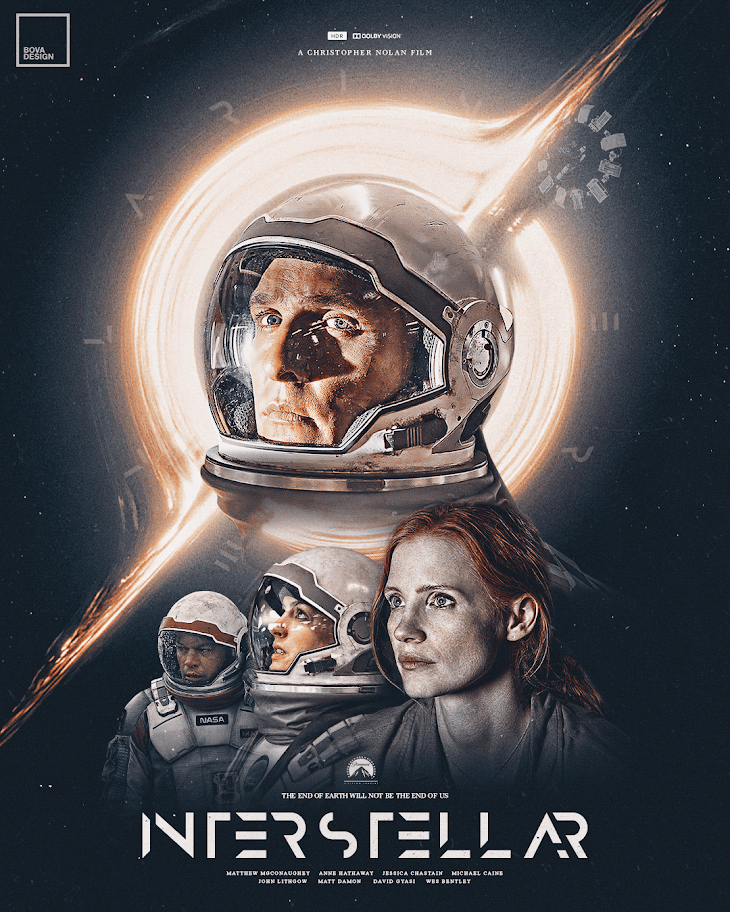

Release date :
November 5, 2014 (United States)
Directed by :
Christopher Nolan
Main characters :
Matthew McConaughey
Anne Hathaway
Jessica Chastain
Bill Irwin
Ellen Burstyn
Michael Caine
Running time :
169 minutes
IMDB rating :
8.7/10
Download Link:
Download Now